Clean Architecture: guía paso a paso
| Qué construyes | clean_app, la misma app en tres capas (presentación, dominio y datos), con una fuente de datos intercambiable entre Firestore y SQLite y pruebas con una fuente en memoria |
| Prerrequisitos | La guía de MVVM y Repository Pattern: se parte de la misma funcionalidad y se reorganiza para que el dominio no dependa de nada. No necesitas el código de esa guía, se reconstruye aquí |
| Herramientas | Flutter 3.41.9, Dart 3.11.5, VS Code, un emulador o un teléfono con Android, Node.js y una cuenta de Google |
Presentación interactiva: los anillos de Clean Architecture, la regla de dependencia y cómo se cambia Firestore por SQLite sin tocar el resto
Con MVVM y Repository la pantalla dejó de hacer seis trabajos a la vez, pero queda un límite: el ProductosViewModel de mvvm_app guarda un ProductosRepository que es una clase concreta, y el archivo de esa clase importa cloud_firestore y recibe un QueryDocumentSnapshot. El ViewModel no importa Firestore, pero depende de algo que sí lo hace. Por eso guardar los productos en el teléfono en vez de la nube obliga a reescribir el Service y el Repository, y en clase_nube ya viste el resultado de tener las dos fuentes sin un límite claro: dos modelos (Producto con id entero y ProductoNube con id de texto) y dos pantallas casi iguales (productos_pantalla.dart y productos_nube_pantalla.dart). Clean Architecture resuelve ese límite con tres capas y una sola regla: las dependencias apuntan hacia adentro, y lo más interno (el dominio) no conoce a nadie.
Construyes un proyecto nuevo llamado clean_app, desde cero, un archivo a la vez y de adentro hacia afuera: primero el dominio, que no depende de nada; después los datos, que implementan lo que el dominio pide; después la presentación, que usa lo que el dominio ofrece; y al final el main, que conecta todo. El nombre del proyecto importa: cada import de esta guía empieza con package:clean_app/. En cada paso encuentras qué se hace y por qué, el archivo completo, qué debes ver al terminar, el error más probable y el contraste con mvvm_app o con el código “antes” de clase_nube.
Instalar y preparar
- Versiones. El código de esta guía se verificó con Flutter 3.41.9 (Dart 3.11.5) y con los paquetes en la versión exacta que se indica abajo.
- Dependencias con versión fija.
flutter pub add cloud_firestore:7.1.0 firebase_auth:7.0.1 firebase_core:5.1.0 sqflite:2.4.2+1 path:1.9.1. Sin versión se instala la última, y una versión mayor puede cambiar la API. - Nombre del proyecto. Debe ser
clean_app: cadaimportde la guía empieza conpackage:clean_app/. - Herramientas de Firebase, una sola vez por equipo.
dart pub global activate flutterfire_cliyfirebase login.
Conectar con Firebase
- Conectar la app.
flutterfire configurese ejecuta desde la carpetaclean_app, después de instalarfirebase_core. Elige el proyecto de Firebase de siempre, deja marcada soloandroidy confirma que el identificador seaco.edu.iue.clean_app. Generalib/firebase_options.dartyandroid/app/google-services.json; no se editan a mano. - Consola de Firebase. Authentication con el método de correo y contraseña habilitado. Base de Firestore creada, con la colección
productos. Reglas:allow read: if true;yallow write: if request.auth != null;. Sin esas reglas, o sin sesión iniciada, toda escritura en la nube respondepermission-deniedy la app muestra “Inicia sesión para guardar cambios”. - Dos fuentes, dos requisitos distintos. La fuente de la nube necesita Firebase, reglas y sesión. La fuente del teléfono (SQLite) no necesita cuenta ni internet; su archivo
mercado_clean.dbse crea la primera vez que se abre. - Inicio en
main.dart.WidgetsFlutterBinding.ensureInitialized()yawait Firebase.initializeApp(options: DefaultFirebaseOptions.currentPlatform)van antes derunApp. La base SQLite se abre conawait SqliteProductosRepository.abrir()antes de construir la app. - Sin internet. Firestore guarda una copia local en Android: la lista se lee sin conexión y las escrituras quedan pendientes y el producto aparece con “(sin enviar)” mientras el servidor no confirme. SQLite siempre responde, con o sin red.
Probar
- Dónde probar. En el emulador de Android o en un teléfono.
sqfliteno corre en Chrome ni en Windows.flutter testno usa SQLite ni Firebase: las pruebas trabajan conProductosEnMemoria. - Comprobaciones.
flutter analyzedebe responderNo issues found!,flutter testdebe pasar y, al final, el comando del último paso comprueba que el dominio no importa a las otras capas.
Con las versiones fijadas de Firebase, el plugin de Kotlin que genera flutter create (2.2.20) es demasiado viejo: firebase_auth falla con Module was compiled with an incompatible version of Kotlin. En android/settings.gradle.kts cambia la versión del plugin org.jetbrains.kotlin.android a 2.3.21. En android/app/build.gradle.kts quita el bloque kotlinOptions { jvmTarget = ... } y, fuera del bloque android { }, escribe kotlin { compilerOptions { jvmTarget = org.jetbrains.kotlin.gradle.dsl.JvmTarget.JVM_17 } }. Con ese cambio flutter build apk --debug compila (verificado con este proyecto).
Las tres capas, y lo que cada una puede conocer:
| Capa | Carpeta | Qué contiene | Qué puede importar |
|---|---|---|---|
| Presentación | lib/presentation |
Pantallas y ViewModels | domain y Flutter. Nunca data |
| Dominio | lib/domain |
Entidades, fallas, contratos de repositorio y casos de uso | Solo domain. Es Dart puro |
| Datos | lib/data |
DTO y un repositorio por fuente de datos | domain, Firebase y sqflite |
Solo main.dart conoce las tres capas, porque es el lugar donde se arma la app.
Cómo funciona Clean Architecture antes de escribir código
Antes del primer archivo conviene tener el mapa completo de lo que vas a construir. Esta sección explica la arquitectura con los nombres reales de clean_app: qué hay en cada anillo, qué regla los une, qué hace y qué no hace cada pieza, y cómo recorre un pedido (agregar un producto) la app de punta a punta. Es la versión escrita de las diapositivas c1-clean y c1-flujo de la presentación. Cada pieza que aparece aquí se escribe más adelante, en el paso que se indica.
Los anillos: de lo que casi nunca cambia a lo que cambia
Clean Architecture se dibuja como anillos concéntricos. Cuanto más al centro está una pieza, más tiempo vive y menos depende de herramientas. Cuanto más afuera, más cambia.
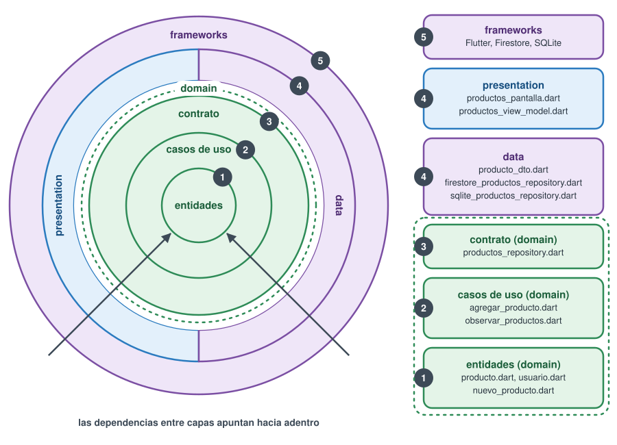
Cuanto más al centro está una pieza, menos depende de herramientas, y las dependencias de código apuntan siempre hacia adentro.
+----------------------------------------------------------------+
| 5. Herramientas externas: Flutter, Firestore, SQLite |
| +----------------------------------------------------------+ |
| | 4. Adaptadores: presentation y data | |
| | +----------------------------------------------------+ | |
| | | 3. Contrato: ProductosRepository | | |
| | | +----------------------------------------------+ | | |
| | | | 2. Casos de uso: AgregarProducto y otros | | | |
| | | | +----------------------------------------+ | | | |
| | | | | 1. Centro: Producto, NuevoProducto | | | | |
| | | | +----------------------------------------+ | | | |
| | | +----------------------------------------------+ | | |
| | +----------------------------------------------------+ | |
| +----------------------------------------------------------+ |
+----------------------------------------------------------------+- El centro: entidades y reglas.
Producto(domain/entities/producto.dart) yNuevoProducto(domain/entities/nuevo_producto.dart), conUsuarioyFallaal lado. Es lo que seguiría siendo cierto aunque cambiara toda la app: un producto tiene nombre, precio y disponibilidad, y un precio debe ser mayor que cero.NuevoProductoguarda esa regla en su constructor. - Casos de uso.
ObservarProductos,AgregarProducto,CambiarDisponibleyBorrarProducto, endomain/usecases. Son lo que la app hace: una clase por acción, con nombre propio. - El contrato.
ProductosRepository(domain/repositories/productos_repository.dart), en el borde del dominio. Dice qué necesita la app de afuera (observar, agregar, cambiar la disponibilidad, borrar) sin decir cómo se hace. Los casos de uso y el contrato son dominio: viven en la misma carpeta y los primeros usan el segundo. - Adaptadores. Son dos carpetas.
presentation(ProductosPantalla,ProductosViewModel) traduce entre el usuario y el dominio.data(ProductoDto,FirestoreProductosRepository,SqliteProductosRepository,proteger) traduce entre el dominio y cada fuente de datos. - Herramientas externas (frameworks). Flutter (los widgets), Firestore (
cloud_firestore) y SQLite (sqflite). No son archivos del proyecto sino paquetes, y son lo que más cambia: una versión nueva, otra base de datos, otro marco de interfaz.
La tabla de las tres capas de arriba agrupa por carpeta; los anillos agrupan por cuánto cambia cada cosa. Una capa no es un anillo: la carpeta domain contiene los tres anillos interiores, y presentation y data son los dos adaptadores, uno a cada lado.
La regla de dependencia, con evidencia
Una sola regla sostiene el dibujo: las dependencias de código apuntan hacia adentro. Una capa puede conocer (importar) su propia capa y las más internas, y nunca una más externa: presentation y data importan domain y no se importan entre sí. Dentro de domain, el caso de uso importa el contrato, que es el borde de la misma carpeta. Los adaptadores usan las herramientas del anillo exterior (Flutter en presentation, cloud_firestore y sqflite en data), porque ese es su trabajo: son el único lugar de la app, además de main.dart, donde las herramientas entran al código. En el proyecto significa: presentation conoce domain, data conoce domain, y domain no conoce a nadie.
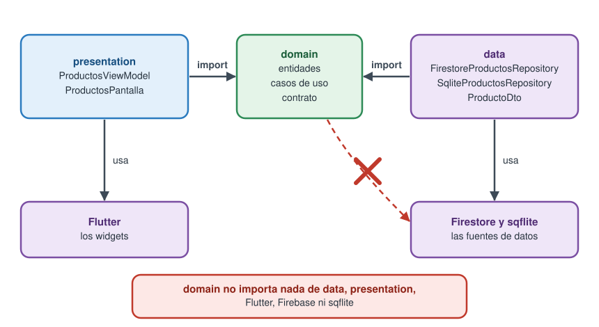
presentation y data conocen a domain, pero domain no importa a nadie.
La evidencia está en los import. Los archivos del dominio de clean_app tienen diez import en total, y todos empiezan con package:clean_app/domain/: ninguno trae Flutter, Firebase ni sqflite. El contrato, por ejemplo, solo importa dos entidades:
lib/domain/repositories/productos_repository.dart
import 'package:clean_app/domain/entities/nuevo_producto.dart';
import 'package:clean_app/domain/entities/producto.dart';En la capa de datos el import va en sentido contrario: el repositorio de Firestore importa el contrato del dominio, y el dominio nunca importa ese archivo.
lib/data/firestore/firestore_productos_repository.dart
import 'package:clean_app/domain/repositories/productos_repository.dart';El contraste con mvvm_app está en el mismo tipo de línea. Allí el ViewModel importa una clase que vive en data y que a su vez importa Firestore; aquí el ViewModel solo importa el dominio.
mvvm_app: lib/ui/productos/view_models/productos_view_model.dart
import 'package:mvvm_app/data/repositories/productos_repository.dart';clean_app: lib/presentation/productos/productos_view_model.dart
import 'package:clean_app/domain/usecases/agregar_producto.dart';Lo que la regla prohíbe es una flecha del dominio hacia Firestore, por ejemplo un import 'package:cloud_firestore/cloud_firestore.dart'; dentro de domain. Si apareciera, el dominio dependería de una herramienta que cambia y dejaría de ser Dart puro. En el Paso 17 hay un comando que lista los import del dominio para comprobarlo en tu propio código.
Quién hace qué, y quién no
Una arquitectura es también una lista de cosas que cada pieza se niega a hacer. Esa negativa es lo que permite cambiar una pieza sin tocar las demás.
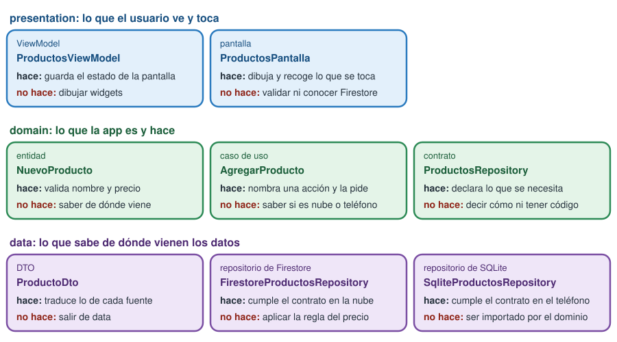
Cada pieza tiene un trabajo y una negativa, y esa negativa permite cambiar una sin tocar las demás.
| Capa o pieza | Qué hace | Qué NO hace |
|---|---|---|
Producto (Paso 2) |
Representa un producto de la app, con sus cinco campos fijos | No sabe de dónde viene ni cómo se dibuja; no tiene conversiones |
NuevoProducto (Paso 4) |
Representa un producto que todavía no existe y aplica la regla: nombre no vacío y precio mayor que cero, o lanza Falla('datos-invalidos') |
No tiene id, no guarda nada y no escribe mensajes para el usuario |
Casos de uso, como AgregarProducto (Paso 6) |
Dan nombre a una acción de la app y se la piden al contrato | No saben si los datos están en la nube o en el teléfono; todavía no agregan reglas propias |
ProductosRepository (Paso 5) |
Declara lo que el dominio necesita de afuera | No tiene código y no importa ninguna implementación |
ProductosPantalla (Paso 14) |
Dibuja y recoge lo que el usuario escribe y toca | No valida, no decide mensajes y no conoce Firestore ni SQLite |
ProductosViewModel (Paso 12) |
Guarda el estado (productos, error), crea el NuevoProducto, llama a los casos de uso y traduce cada Falla a un texto |
No dibuja widgets y no importa data |
ProductoDto (Paso 7) |
Traduce lo que entrega cada fuente a un Producto |
No sale de data: hacia afuera solo viaja la entidad |
FirestoreProductosRepository (Paso 9) y SqliteProductosRepository (Paso 11) |
Cumplen el contrato con una fuente real y convierten sus errores en Falla |
No aplican la regla del precio (llega ya validada) y el dominio no los importa |
main.dart (Paso 16) |
Arma la app: elige la fuente y construye los casos de uso | No tiene reglas ni dibuja la pantalla de productos |
La analogía del tomacorriente
Piensa en una casa. La casa define el tomacorriente: su forma y su voltaje. La lámpara se adapta al tomacorriente, no al revés. Si cambias de lámpara no abres la pared, y si la pared tiene un enchufe distinto, cada lámpara cambia su clavija, no la casa.
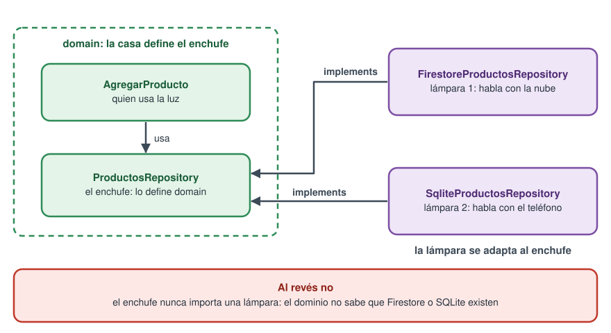
El dominio define el enchufe y cada lámpara se adapta a él, nunca al revés.
Traducido a clean_app, la casa es el dominio:
- El tomacorriente es
ProductosRepository. Lo define el dominio y dice qué se puede pedir: observar, agregar, cambiar la disponibilidad y borrar. - Las lámparas son
FirestoreProductosRepositoryySqliteProductosRepository. Cada una se adapta al contrato, y una tercera,ProductosEnMemoria, hace lo mismo en las pruebas (Paso 17). - Quien usa la luz,
AgregarProducto, solo sabe que hay un tomacorriente y nunca pregunta qué lámpara tiene detrás.
Esa adaptación es la inversión de dependencias, y se ve en una palabra: implements. Primero el contrato, en el dominio:
lib/domain/repositories/productos_repository.dart
abstract interface class ProductosRepository {Y después la lámpara, en data, que declara que cumple ese contrato:
lib/data/firestore/firestore_productos_repository.dart
class FirestoreProductosRepository implements ProductosRepository {lib/data/sqlite/sqlite_productos_repository.dart
class SqliteProductosRepository implements ProductosRepository {Hay dos direcciones y no coinciden. En la ejecución el pedido sale hacia afuera: la pantalla llama al ViewModel, este al caso de uso, este al contrato y, en tiempo de ejecución, el contrato responde con Firestore. En el código la dependencia apunta hacia adentro: el archivo de Firestore importa el contrato y declara implements, pero el contrato no sabe que Firestore existe. Sin implements, el caso de uso tendría que llamar a Firestore directamente y el dominio tendría que importar data. Con implements, la dependencia de código se invierte justo en ese punto, y por eso se llama inversión.
| Pieza | Orden en que se ejecuta | Qué importa de la app |
|---|---|---|
ProductosPantalla |
1 | ProductosViewModel y la entidad Producto |
ProductosViewModel |
2 | Solo domain: entidades, Falla y casos de uso |
AgregarProducto |
3 | Solo domain: el contrato y la entidad |
ProductosRepository |
4 (el borde) | Solo domain: las entidades |
FirestoreProductosRepository |
5 | domain (el contrato y las entidades) y data (ProductoDto, proteger) |
| Firestore | 6 | Es un paquete externo: no importa nada de la app |
Leída de arriba abajo, la columna del medio avanza hacia afuera; la última columna solo apunta a domain o a la propia capa; el salto del caso de uso al contrato ocurre dentro de domain.
Un pedido de punta a punta: agregar un producto
Sigue un pedido real. El usuario escribe Papa criolla y 2500 y toca Agregar. Cada paso muestra el fragmento exacto del proyecto (archivo y método) y remite al paso de la guía donde se escribe ese archivo. Es el mismo recorrido de la diapositiva c1-flujo.
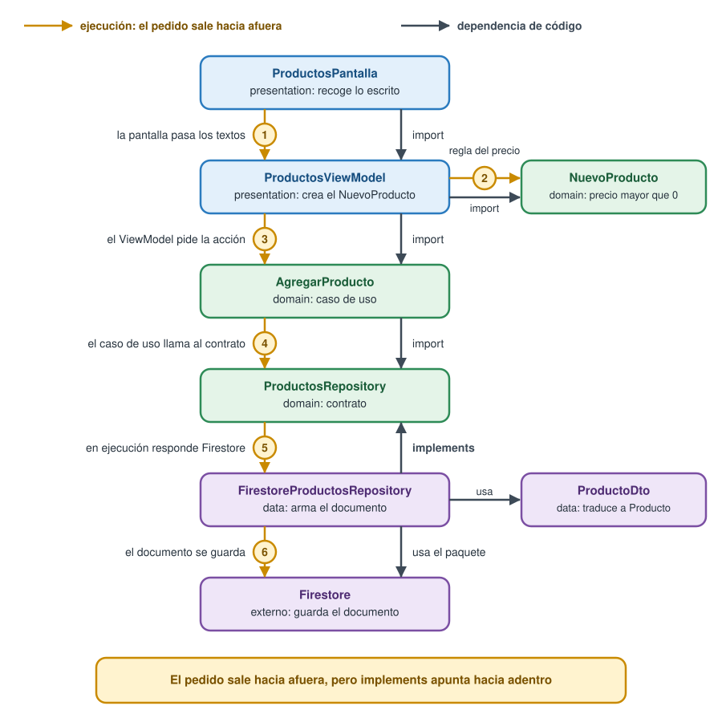
El pedido sale hacia afuera, pero implements apunta hacia adentro, y ahí se invierte la dependencia.
La pantalla recoge el pedido.
ProductosPantallano valida nada: les pasa al ViewModel los textos que están en sus dos controladores y, solo si el ViewModel respondetrue, limpia los campos. Se escribe en el Paso 14.lib/presentation/productos/productos_pantalla.dart, método
agregarvoid agregar() { if (vm.agregar(nombre.text, precio.text)) { nombre.clear(); precio.clear(); } }El ViewModel crea un
NuevoProducto, y ahí se aplica la regla.ProductosViewModelconvierte el texto del precio en número (un texto que no es número queda en0) y construye unNuevoProducto. Si la regla falla, atrapa laFalla, guarda el mensaje, avisa a la pantalla y devuelvefalse; el pedido muere aquí y la pantalla conserva lo escrito. El ViewModel se escribe en el Paso 12 y la regla en el Paso 4.lib/presentation/productos/productos_view_model.dart, método
agregartry { nuevo = NuevoProducto(nombre, int.tryParse(precio) ?? 0); } on Falla catch (e) { error = _mensajeDe(e.codigo); _notificar(); return false;lib/domain/entities/nuevo_producto.dart, constructor
NuevoProducto(String nombre, this.precio) : nombre = nombre.trim() { if (this.nombre.isEmpty || precio <= 0) { throw const Falla('datos-invalidos'); } }El caso de uso nombra la acción. Con un
NuevoProductoválido, el ViewModel lanzaAgregarProductosin esperar la respuesta de la red. El caso de uso solo conoce el tipo del contrato, no una implementación. Se escribe en el Paso 6.lib/domain/usecases/agregar_producto.dart, método
callfinal ProductosRepository _repository; Future<void> call(NuevoProducto nuevo) => _repository.agregar(nuevo);El contrato es el borde.
ProductosRepositorydeclaraagregary nada más. Hasta aquí todo es dominio y Dart puro; a partir de aquí el pedido sale hacia afuera. Se escribe en el Paso 5.lib/domain/repositories/productos_repository.dart
abstract interface class ProductosRepository { Stream<List<Producto>> observar(); Future<void> agregar(NuevoProducto nuevo);El repositorio de Firestore arma el documento. Quien responde es
FirestoreProductosRepository, la implementación quemainentregó. Escribe el mapa a partir delNuevoProducto, que ya llega válido, y lo envuelve enprotegerpara que cualquier error de Firebase salga comoFalla. Se escribe en el Paso 9 (yprotegeren el Paso 8).lib/data/firestore/firestore_productos_repository.dart, método
agregarreturn proteger( () => _coleccion.add({ 'nombre': nuevo.nombre, 'precio': nuevo.precio, 'disponible': true, }),Firestore guarda. El documento llega a la colección
productos, una herramienta externa. Sin internet, Firestore lo guarda en el teléfono y lo marca como pendiente hasta que el servidor confirme. La colección se obtiene en el repositorio (Paso 9).lib/data/firestore/firestore_productos_repository.dart, campo
_coleccionfinal _coleccion = FirebaseFirestore.instance.collection('productos');El estado regresa por
observar(). Firestore emite el cambio porsnapshots()y el repositorio convierte cada documento en unProductoconProductoDto.desdeFirestore(doc).aEntidad(). Dedatasolo sale la entidad. Se escribe en el Paso 9, y el DTO en el Paso 7.lib/data/firestore/firestore_productos_repository.dart, método
observarreturn _coleccion.snapshots().map( (datos) => [ for (final doc in datos.docs) ProductoDto.desdeFirestore(doc).aEntidad(), ], );El ViewModel recibe la lista nueva.
observar()es el caso de usoObservarProductos, que llama al mismo contrato (Paso 6). Cuando llega la lista, el ViewModel la asigna aproductosy avisa con_notificar(). Se escribe en el Paso 12.lib/presentation/productos/productos_view_model.dart, constructor
_suscripcion = observar().listen( (lista) { productos = lista; _notificar(); },La pantalla se redibuja.
ListenableBuilderescucha al ViewModel y vuelve a construir la lista: la filaPapa criollaaparece, y si el servidor todavía no confirmó, con(sin enviar). Se escribe en el Paso 14.lib/presentation/productos/productos_pantalla.dart, método
buildchild: ListenableBuilder( listenable: vm, builder: (context, _) { final lista = vm.productos;
El pedido salió hacia afuera en los tramos 1 a 6 del recorrido y volvió como estado en los tramos 7 a 9. En ningún tramo una capa interna importó una externa.
El intercambio: cambiar la fuente no toca nada más
Todo lo anterior se paga en un momento: cambiar de fuente. main.dart es el único archivo que conoce las dos implementaciones y las entrega a MainApp como ProductosRepository. Se escribe en el Paso 16.
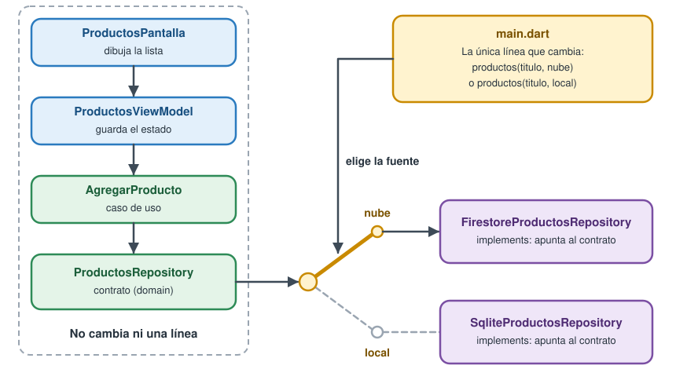
Cambiar de la nube al teléfono es cambiar un argumento en main.dart; todo lo demás queda igual.
lib/main.dart, función main
nube: FirestoreProductosRepository(),
local: await SqliteProductosRepository.abrir(),
cuenta: FirebaseCuentaRepository(),Después, el método productos construye la misma pantalla y el mismo ViewModel con los mismos casos de uso, y solo cambia el argumento fuente.
lib/main.dart, clase MainApp, método productos
Widget productos(String titulo, ProductosRepository fuente) {
return ProductosPantalla(
titulo: titulo,
viewModel: ProductosViewModel(
observar: ObservarProductos(fuente),
agregar: AgregarProducto(fuente),lib/main.dart, clase MainApp, método build
abrir(context, productos('Productos en la nube', nube)), abrir(context, productos('Productos en el teléfono', local)),La misma ProductosPantalla abre las dos listas. Para pasar de la nube al teléfono no cambian la pantalla, el ViewModel, los casos de uso, el contrato ni las entidades: cambia el argumento, nube o local, y con él la lámpara que está detrás del tomacorriente. Esa es la prueba de la arquitectura, y es lo que verás en el Paso 16: la misma pantalla con las dos fuentes.
Paso 0. Crear el proyecto, las dependencias y la conexión a Firebase
Qué se hace: crear el proyecto, instalar los paquetes con versión fija y conectarlo con el proyecto de Firebase que ya usaste.
flutter create --empty --org co.edu.iue --platforms=android clean_app
cd clean_app
flutter pub add cloud_firestore:7.1.0 firebase_auth:7.0.1 firebase_core:5.1.0 sqflite:2.4.2+1 path:1.9.1--emptydejalib/main.dartcasi vacío, sin la app del contador.--org co.edu.iuedefine el identificador de la app en Android:co.edu.iue.clean_app. Ese identificador se registra en Firebase y no conviene cambiarlo después.- Los tres paquetes de Firebase son los mismos de
mvvm_app. Se agregansqflite(la base SQLite del teléfono) ypath(arma la ruta del archivo de la base conjoin), que ya usaste en la guía de persistencia local. - Las versiones van fijas porque el código de esta guía se verificó con ellas; sin versión se instalaría la última, y una versión mayor puede cambiar la API.
Al terminar, la sección dependencies: de pubspec.yaml queda así (el resto del archivo lo escribe flutter create; no lo cambies):
pubspec.yaml
dependencies:
cloud_firestore: 7.1.0
firebase_auth: 7.0.1
firebase_core: 5.1.0
flutter:
sdk: flutter
path: 1.9.1
sqflite: 2.4.2+1Conexión a Firebase. Esta guía no repite cómo crear el proyecto en la consola de Firebase, activar Authentication, crear la base de Firestore ni publicar sus reglas: eso está en la guía de persistencia local y nube, en las etapas de Firebase y Authentication y de Firestore. Si ya hiciste esas etapas, reutiliza el mismo proyecto de Firebase. Lo único que repites es conectar esta app nueva, desde la carpeta clean_app:
flutterfire configureEn las preguntas, elige el proyecto de Firebase de siempre, deja marcada solo android y comprueba que el identificador sea co.edu.iue.clean_app. El comando genera lib/firebase_options.dart, genera android/app/google-services.json y ajusta los archivos de Gradle. El archivo firebase_options.dart se genera ahí: no se escribe ni se edita a mano, y por eso esta guía no lo muestra ni lo cuenta entre los archivos del proyecto.
Qué debe verse al terminar: existen lib/firebase_options.dart y android/app/google-services.json, y flutter analyze responde No issues found!.
Error más probable: ejecutar flutterfire configure antes de instalar firebase_core. El archivo generado queda con el error Target of URI doesn't exist: 'package:firebase_core/firebase_core.dart'. Se arregla instalando el paquete y volviendo a ejecutar flutter pub get. Otro error común es no tener las reglas de Firestore de la guía de persistencia y nube: sin ellas, la app corre pero las escrituras en la nube fallan con permission-denied.
No toques lib/main.dart hasta el paso 16; mientras tanto, la app sigue mostrando la pantalla que dejó flutter create.
Paso 1. La estructura de carpetas, y por qué es así
Qué se hace: crear las carpetas vacías dentro de lib. Antes de escribir una sola línea de lógica, el proyecto ya dice dónde va cada cosa. Este es el árbol final, con los archivos que escribirás en los pasos siguientes:
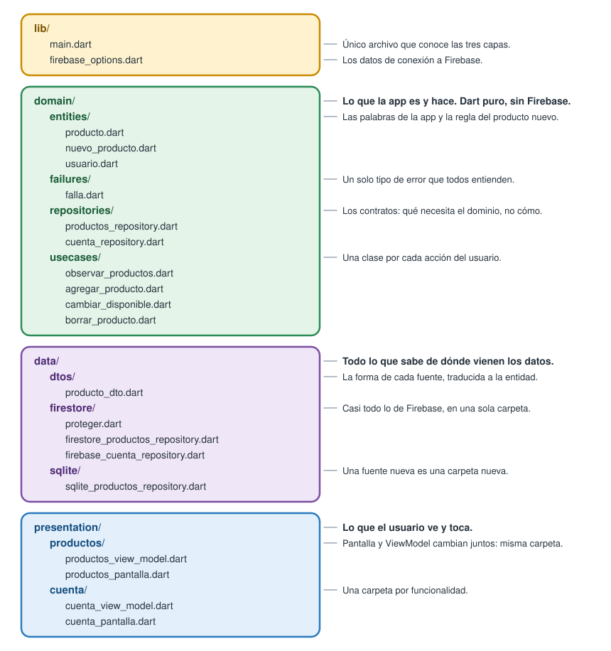
Cada carpeta tiene un color de capa y una sola razón de ser.
lib
+-- main.dart
+-- firebase_options.dart
+-- domain
| +-- entities
| | +-- producto.dart
| | +-- nuevo_producto.dart
| | +-- usuario.dart
| +-- failures
| | +-- falla.dart
| +-- repositories
| | +-- productos_repository.dart
| | +-- cuenta_repository.dart
| +-- usecases
| +-- observar_productos.dart
| +-- agregar_producto.dart
| +-- cambiar_disponible.dart
| +-- borrar_producto.dart
+-- data
| +-- dtos
| | +-- producto_dto.dart
| +-- firestore
| | +-- proteger.dart
| | +-- firestore_productos_repository.dart
| | +-- firebase_cuenta_repository.dart
| +-- sqlite
| +-- sqlite_productos_repository.dart
+-- presentation
+-- productos
| +-- productos_view_model.dart
| +-- productos_pantalla.dart
+-- cuenta
+-- cuenta_view_model.dart
+-- cuenta_pantalla.dartCada carpeta existe por una razón:
domainguarda lo que la app es y hace, sin saber cómo se muestra ni dónde se guarda. Es Dart puro: ningún archivo de esta carpeta importa Flutter, Firebase ni sqflite. Por eso es la parte que más tiempo vive: cambiar la interfaz o la base no la toca.domain/entitiesguarda las palabras de la app (Producto,Usuario) y la regla de qué es un producto nuevo válido (NuevoProducto).domain/failuresguarda el tipo de error propio de la app,Falla. Así los errores de cualquier fuente se vuelven un solo tipo que la presentación entiende sin importar nada dedata.domain/repositoriesguarda los contratos: interfaces que dicen qué necesita el dominio de la capa de datos (observar, agregar, borrar), sin decir cómo. Esta es la diferencia central con MVVM: el contrato vive en el dominio, no endata. El dominio define el qué;dataaporta el cómo.domain/usecasesguarda una clase por cada acción que el usuario puede hacer sobre los productos. Son el punto de entrada que usa la presentación.dataguarda todo lo que sabe de dónde vienen y adónde van los datos. Se divide por fuente de datos (firestore,sqlite) y no por tipo, como enmvvm_app. La razón es que el intercambio se vea en las carpetas: agregar o quitar una fuente es agregar o quitar una carpeta, y casi todo lo que use Firestore o Authentication está endata/firestore.data/dtosguarda el DTO (data transfer object): la forma en que cada fuente entrega un producto, con su traducción a la entidad. Queda fuera de las carpetas por fuente porque lo comparten las dos: tiene una entrada para Firestore y otra para SQLite.data/firestoreagrupa lo que usa Firebase. La carpeta lleva el nombre de la nube, pero también guarda el repositorio de la cuenta, que usa Authentication y no Firestore: es un compromiso de nombre, no de estructura.presentationguarda lo que el usuario ve y toca, dividido por funcionalidad (productos,cuenta). Pantalla y ViewModel de una funcionalidad cambian juntos, así que viven en la misma carpeta; enmvvm_appiban en subcarpetaswidgetsyview_models, que aquí no hacen falta porque cada funcionalidad tiene solo dos archivos.main.dartqueda en la raíz porque es el único archivo que conoce las tres capas.
La regla que da sentido a todo es la de dependencia. La presentación conoce el dominio. Los datos conocen el dominio. El dominio no conoce a nadie. Las flechas siempre apuntan hacia adentro, hacia domain, y nunca al revés. Al final de la guía (paso 17) hay un comando que comprueba esa regla sobre tu propio código.
Qué debe verse al terminar: en el explorador del editor, las carpetas domain/entities, domain/failures, domain/repositories, domain/usecases, data/dtos, data/firestore, data/sqlite, presentation/productos y presentation/cuenta dentro de lib.
Error más probable: dejar el contrato (ProductosRepository) en data, porque en mvvm_app el Repository estaba ahí. Funciona, pero entonces el dominio y los casos de uso tendrían que importar data y la regla de dependencia se rompe. También fallan los nombres con mayúsculas o tildes: en Dart los archivos van en minúsculas y con guion bajo.
Contraste con mvvm_app: allí lib se dividía en ui, domain/models y data/{services,repositories}. Aquí domain crece (contratos, casos de uso, fallas) y data se parte por fuente. Contraste con el “antes”: clase_nube no tenía carpetas para esto; los dos modelos, las dos pantallas y base_datos.dart vivían juntos en lib.
Paso 2. Las entidades Producto y Usuario
Qué se hace: crear los dos objetos que representan las cosas de la app: un producto y quien tiene la sesión iniciada.
lib/domain/entities/producto.dart
class Producto {
const Producto({
required this.id,
required this.nombre,
required this.precio,
required this.disponible,
this.pendiente = false,
});
final String id;
final String nombre;
final int precio;
final bool disponible;
final bool pendiente;
}lib/domain/entities/usuario.dart
class Usuario {
const Usuario(this.correo);
final String correo;
}Por qué así:
- Todos los campos de
Productosonfinaly el constructor esconst: unProductono cambia; si algo cambia, llega otroProductodesde la fuente. idesStringporque es el tipo que la app usa para identificar un producto sin importar la fuente: Firestore genera ids de texto, y SQLite genera enteros que el DTO convierte a texto (paso 7).pendienteempieza enfalse. Solo Firestore lo vuelvetrue, cuando el producto se guardó en el teléfono pero el servidor todavía no lo confirmó; la pantalla muestra entonces “(sin enviar)”. SQLite nunca lo usa.Usuariosolo guarda el correo, porque es lo único que la app necesita de quien inició sesión. Firebase entrega un objetoUsercon muchos más datos; este es el único que el resto de la app conoce.- Ningún archivo tiene
import: no saben que existen Flutter, Firestore o SQLite. Esa ignorancia es lo que permite cambiar la fuente sin tocarlos.
Qué debe verse al terminar: flutter analyze sin problemas. Todavía no hay nada que ejecutar.
Error más probable: olvidar required en un campo de Producto y que el editor marque error al construirlo más adelante.
Contraste: en clase_nube había dos modelos, Producto (producto.dart, id entero, con toMap y fromMap) y ProductoNube (producto_nube.dart, id de texto, con fromDoc que leía el documento de Firestore). Aquí hay una sola entidad sin ninguna conversión adentro. En mvvm_app este archivo era idéntico y se llamaba domain/models/producto.dart: cambia la carpeta (entities), no el contenido.
Paso 3. La Falla
Qué se hace: crear el único tipo de error que el resto de la app va a conocer.
lib/domain/failures/falla.dart
class Falla implements Exception {
const Falla(this.codigo);
final String codigo;
}Por qué así:
- Una
Fallalleva uncodigode texto, por ejemplopermission-denied,datos-invalidosobase-local. La capa de datos convierte los errores de cada fuente en unaFalla, y la presentación convierte el código en un mensaje para el usuario. - Implementa
Exceptionpor convención: marca un error esperado, que el código atrapa conon Falla catch. - Vive en el dominio porque los tres lados la necesitan:
datala lanza, el dominio la lanza al validar (paso 4) y la presentación la atrapa. Si viviera endata, la presentación tendría que importardatasolo para atrapar un error.
Qué debe verse al terminar: flutter analyze sin problemas.
Error más probable: poner el mensaje para el usuario dentro de la Falla. Funciona, pero entonces el dominio decide cómo habla la interfaz. El mensaje es de la presentación; la falla solo dice qué pasó.
Contraste con mvvm_app: allí la excepción se llamaba DatosException y estaba en data/repositories/datos_exception.dart, junto con proteger, así que el ViewModel importaba un archivo de data para atrapar errores. Aquí la Falla está en el dominio y proteger se mudó a data (paso 8).
Paso 4. NuevoProducto: la regla del precio
Qué se hace: crear el objeto que representa un producto que todavía no existe en ninguna fuente, y que no se puede construir si sus datos son inválidos.
lib/domain/entities/nuevo_producto.dart
import 'package:clean_app/domain/failures/falla.dart';
class NuevoProducto {
NuevoProducto(String nombre, this.precio) : nombre = nombre.trim() {
if (this.nombre.isEmpty || precio <= 0) {
throw const Falla('datos-invalidos');
}
}
final String nombre;
final int precio;
}Por qué así:
NuevoProductono tieneid: el id lo asigna la fuente al guardar. Por eso es distinto deProducto.- La regla está en el constructor: el nombre se recorta con
trim()y, si queda vacío o el precio no es mayor que cero, se lanzaFalla('datos-invalidos'). UnNuevoProductoque existe es siempre válido, así que ningún repositorio tiene que volver a revisarlo. - Dentro del cuerpo del constructor,
nombrees el parámetro sin recortar ythis.nombrees el campo ya recortado. Por eso la revisión usathis.nombre.isEmpty. - La regla vive en el dominio y no en el ViewModel porque es una regla de la app, no de una pantalla: cualquier pantalla o fuente futura la hereda sin copiarla.
Qué debe verse al terminar: flutter analyze sin problemas. En el paso 17 la prueba de este archivo verifica que ' Tomate chonto ' queda como 'Tomate chonto' y que 0, -5 y un nombre vacío se rechazan.
Error más probable: escribir nombre.isEmpty en lugar de this.nombre.isEmpty. Revisa el parámetro sin recortar, así que un nombre de solo espacios pasa la regla.
Contraste con mvvm_app: la regla estaba en el if de ProductosViewModel.agregar (líneas 31 a 36 de productos_view_model.dart), mezclada con el estado y el mensaje de error. Contraste con el “antes”: en clase_nube no había regla; int.tryParse(precio.text) ?? 0 (línea 35 de productos_nube_pantalla.dart) dejaba pasar un precio de cero.
Paso 5. Los contratos de repositorio
Qué se hace: crear las dos interfaces que dicen qué necesita el dominio de la capa de datos.
lib/domain/repositories/productos_repository.dart
import 'package:clean_app/domain/entities/nuevo_producto.dart';
import 'package:clean_app/domain/entities/producto.dart';
abstract interface class ProductosRepository {
Stream<List<Producto>> observar();
Future<void> agregar(NuevoProducto nuevo);
Future<void> cambiarDisponible(String id, bool disponible);
Future<void> borrar(String id);
}lib/domain/repositories/cuenta_repository.dart
import 'package:clean_app/domain/entities/usuario.dart';
abstract interface class CuentaRepository {
Stream<Usuario?> sesion();
Future<void> registrar(String correo, String clave);
Future<void> iniciar(String correo, String clave);
Future<void> salir();
}Por qué así:
abstract interface classes un contrato: solo declara métodos, no los implementa, y una clase solo puede cumplirlo conimplements. No se puede extender ni crear una instancia de él.- El contrato habla el idioma del dominio: recibe un
NuevoProductoya validado y devuelveStream<List<Producto>>, nunca un documento de Firestore ni una fila de SQLite. Por eso cualquier fuente lo puede cumplir. observardevuelve unStream: la lista se actualiza sola cuando cambia la fuente. Quien lo escuche no sabe si los cambios vienen de un servidor o de un archivo local.CuentaRepository.sesion()emite unUsuario?:nullsignifica que no hay sesión.- Los contratos viven en el dominio porque es el dominio quien los exige. Los datos los implementan; el dominio nunca importa una implementación.
Qué debe verse al terminar: flutter analyze sin problemas.
Error más probable: escribir extends ProductosRepository en lugar de implements ProductosRepository en una implementación. El analizador responde The class 'ProductosRepository' can't be extended outside of its library because it's an interface class. Un contrato se cumple con implements.
Contraste con mvvm_app: ProductosRepository era una clase concreta en data/repositories que importaba cloud_firestore, y el ViewModel dependía de ella (línea 5 de su productos_view_model.dart). Aquí el nombre es el mismo pero lo que existe en el dominio es solo el contrato.
Paso 6. Los casos de uso
Qué se hace: crear una clase por cada acción que el usuario puede hacer con los productos.
lib/domain/usecases/observar_productos.dart
import 'package:clean_app/domain/entities/producto.dart';
import 'package:clean_app/domain/repositories/productos_repository.dart';
class ObservarProductos {
ObservarProductos(this._repository);
final ProductosRepository _repository;
Stream<List<Producto>> call() => _repository.observar();
}lib/domain/usecases/agregar_producto.dart
import 'package:clean_app/domain/entities/nuevo_producto.dart';
import 'package:clean_app/domain/repositories/productos_repository.dart';
class AgregarProducto {
AgregarProducto(this._repository);
final ProductosRepository _repository;
Future<void> call(NuevoProducto nuevo) => _repository.agregar(nuevo);
}lib/domain/usecases/cambiar_disponible.dart
import 'package:clean_app/domain/repositories/productos_repository.dart';
class CambiarDisponible {
CambiarDisponible(this._repository);
final ProductosRepository _repository;
Future<void> call(String id, bool disponible) {
return _repository.cambiarDisponible(id, disponible);
}
}lib/domain/usecases/borrar_producto.dart
import 'package:clean_app/domain/repositories/productos_repository.dart';
class BorrarProducto {
BorrarProducto(this._repository);
final ProductosRepository _repository;
Future<void> call(String id) => _repository.borrar(id);
}Por qué así:
- Cada caso de uso recibe el contrato
ProductosRepositoryen el constructor, no una implementación concreta. Con el repositorio de Firestore funciona; con el de SQLite, también; con uno falso en una prueba, también. - El método se llama
call, así que el objeto se usa como una función:agregar(nuevo). El ViewModel los recibe y los invoca así. - Ahora mismo los cuatro solo delegan: llaman al repositorio y nada más. Es el costo honesto de esta capa (se retoma al final de la guía). Existen porque son el lugar natural para una regla que crezca, por ejemplo “no agregar dos productos con el mismo nombre”, que necesitaría consultar la lista antes de agregar; esa lógica iría aquí, no en la pantalla ni en el repositorio.
- Los casos de uso solo importan el dominio.
Qué debe verse al terminar: flutter analyze sin problemas.
Error más probable: importar la implementación en lugar del contrato (firestore_productos_repository.dart en vez de productos_repository.dart). Con el autocompletado del editor es fácil elegir el archivo equivocado, y rompe la regla de dependencia sin que nada falle de inmediato.
Contraste con mvvm_app: el ViewModel llamaba directamente a _repository.agregar(...). Aquí hay un archivo más por acción, a cambio de que la acción tenga nombre propio y un lugar para crecer.
Paso 7. El DTO: traducir lo que entrega cada fuente
Qué se hace: crear el objeto que sabe leer un producto tal como lo entrega cada fuente y convertirlo en la entidad.
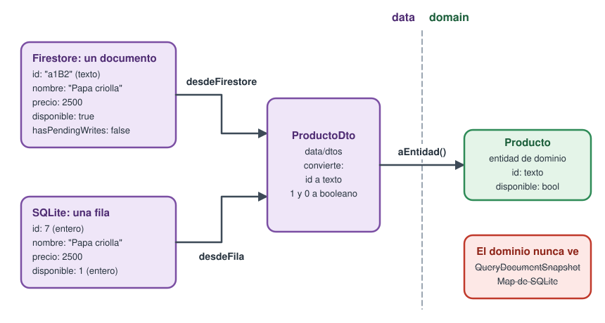
El DTO es la única puerta de entrada: de data solo sale una entidad.
lib/data/dtos/producto_dto.dart
import 'package:clean_app/domain/entities/producto.dart';
import 'package:cloud_firestore/cloud_firestore.dart';
class ProductoDto {
const ProductoDto({
required this.id,
required this.nombre,
required this.precio,
required this.disponible,
this.pendiente = false,
});
factory ProductoDto.desdeFirestore(
QueryDocumentSnapshot<Map<String, dynamic>> doc,
) {
final d = doc.data();
return ProductoDto(
id: doc.id,
nombre: d['nombre'] as String,
precio: d['precio'] as int,
disponible: d['disponible'] as bool,
pendiente: doc.metadata.hasPendingWrites,
);
}
factory ProductoDto.desdeFila(Map<String, Object?> fila) {
return ProductoDto(
id: (fila['id'] as int).toString(),
nombre: fila['nombre'] as String,
precio: fila['precio'] as int,
disponible: fila['disponible'] == 1,
);
}
final String id;
final String nombre;
final int precio;
final bool disponible;
final bool pendiente;
Producto aEntidad() {
return Producto(
id: id,
nombre: nombre,
precio: precio,
disponible: disponible,
pendiente: pendiente,
);
}
}Por qué así:
- Cada fuente entrega el mismo producto con otra forma. Firestore: un documento con
idde texto ydisponiblebooleano, másmetadata.hasPendingWritespara saber si falta enviarlo. SQLite: una fila conidentero ydisponiblecomo1o0. desdeFirestoreydesdeFilason las dos entradas;aEntidad()es la única salida, haciaProducto. Lo que sale dedataes siempre una entidad, nunca un DTO.desdeFilaconvierte el id entero a texto contoString()ydisponible == 1a booleano. Esa conversión es lo que permite que aquí haya un solo modelo dondeclase_nubetenía dos.- Este archivo sí importa
cloud_firestore(porQueryDocumentSnapshot), así quedata/dtosno está libre de Firebase. La regla que se cumple no es “ninguna carpeta dedataes neutra”, sino la que importa: Firebase y sqflite aparecen solo dentro dedata, salvomain.dartyfirebase_options.dart, que inicializan Firebase. - La escritura no usa el DTO: cada repositorio arma su propio mapa al guardar (pasos 9 y 11).
Qué debe verse al terminar: flutter analyze sin problemas. La prueba del paso 17 verifica desdeFila sin base de datos: pasa una fila escrita a mano.
Error más probable: si un documento de Firestore guardó el precio como texto, d['precio'] as int falla en ejecución con type 'String' is not a subtype of type 'int' in type cast. El DTO es el lugar para arreglarlo: la conversión se corrige una vez y el resto de la app no se entera.
Contraste con mvvm_app: la conversión estaba en _aProducto, un método privado de ProductosRepository que solo conocía Firestore. Contraste con el “antes”: ProductoNube.fromDoc y Producto.fromMap eran dos modelos con su propia conversión; ahora son dos entradas de un mismo DTO.
Paso 8. proteger: traducir los errores de Firebase
Qué se hace: crear la función que atrapa los errores de Firebase y los convierte en Falla.
lib/data/firestore/proteger.dart
import 'package:clean_app/domain/failures/falla.dart';
import 'package:firebase_core/firebase_core.dart';
Future<void> proteger(Future<void> Function() accion) async {
try {
await accion();
} on FirebaseException catch (e) {
throw Falla(e.code);
}
}Por qué así:
- Recibe una acción asíncrona, la ejecuta y, si Firebase lanza una
FirebaseException, la vuelve unaFallacon el mismo código. El código llega intacto:permission-deniedsigue siendopermission-denied. - Solo atrapa
FirebaseException. Un error de programación (por ejemplo, unnulldonde no debía) no se disfraza: sigue su camino y se ve. - Vive en
data/firestoreporque conoce un tipo de Firebase. Los repositorios de Firestore y de cuenta la comparten. - SQLite no la usa: su repositorio traduce
DatabaseExceptionpor su cuenta (paso 11).
Qué debe verse al terminar: flutter analyze sin problemas.
Error más probable: importar FirebaseException desde cloud_firestore o firebase_auth en vez de firebase_core. Funciona, pero el archivo queda atado a un paquete de más; el tipo base está en firebase_core, que sirve para los dos.
Contraste con mvvm_app: era la misma función, dentro de datos_exception.dart, y lanzaba DatosException. Contraste con el “antes”: el try y el catch de probar (líneas 18 a 30 de productos_nube_pantalla.dart) estaban en la pantalla, que además decidía el texto del mensaje.
Paso 9. El repositorio de productos en Firestore
Qué se hace: crear la primera implementación del contrato, la que guarda los productos en la nube.
lib/data/firestore/firestore_productos_repository.dart
import 'package:clean_app/data/dtos/producto_dto.dart';
import 'package:clean_app/data/firestore/proteger.dart';
import 'package:clean_app/domain/entities/nuevo_producto.dart';
import 'package:clean_app/domain/entities/producto.dart';
import 'package:clean_app/domain/repositories/productos_repository.dart';
import 'package:cloud_firestore/cloud_firestore.dart';
class FirestoreProductosRepository implements ProductosRepository {
final _coleccion = FirebaseFirestore.instance.collection('productos');
@override
Stream<List<Producto>> observar() {
return _coleccion.snapshots().map(
(datos) => [
for (final doc in datos.docs)
ProductoDto.desdeFirestore(doc).aEntidad(),
],
);
}
@override
Future<void> agregar(NuevoProducto nuevo) {
return proteger(
() => _coleccion.add({
'nombre': nuevo.nombre,
'precio': nuevo.precio,
'disponible': true,
}),
);
}
@override
Future<void> cambiarDisponible(String id, bool disponible) {
return proteger(
() => _coleccion.doc(id).update({'disponible': disponible}),
);
}
@override
Future<void> borrar(String id) => proteger(() => _coleccion.doc(id).delete());
}Por qué así:
implements ProductosRepositoryes la promesa: esta clase cumple el contrato del dominio. Cada método lleva@overridey el compilador exige los cuatro.observartoma elsnapshots()de la colección y convierte cada documento conProductoDto.desdeFirestore(doc).aEntidad(). Quien lo escuche recibeProducto, nunca un documento.agregarrecibe unNuevoProducto, ya válido, y escribe su mapa condisponible: true.cambiarDisponibleyborrarusan el id de texto del documento.- Las tres escrituras pasan por
proteger, así que cualquier fallo de Firebase llega a la presentación comoFalla. - Aquí se junta lo que en
mvvm_apperan dos archivos: el Service (hablar con Firestore) y el Repository (convertir). En Clean la conversión se delegó al DTO y el contrato al dominio, y lo que queda en este archivo es un solo trabajo. - La colección se obtiene al construir el repositorio, así que Firebase debe estar inicializado antes. Por eso
main(paso 16) llama aFirebase.initializeAppantes de crearlo. - Sin internet,
addno termina hasta que el servidor confirma, pero el producto aparece de inmediato en la lista conpendienteentrue: la pantalla lo muestra con “(sin enviar)”.
Qué debe verse al terminar: flutter analyze sin problemas.
Error más probable: crear el repositorio antes de que termine Firebase.initializeApp; en ejecución aparece No Firebase App '[DEFAULT]' has been created.
Contraste con el “antes”: la colección (línea 13), el snapshots() (línea 71), el add (línea 40), el update (línea 106) y el delete (línea 116) de productos_nube_pantalla.dart estaban repartidos entre widgets. Ahora están juntos en un archivo que ninguna pantalla importa.
Paso 10. El repositorio de cuenta
Qué se hace: crear la implementación de CuentaRepository con Firebase Authentication.
lib/data/firestore/firebase_cuenta_repository.dart
import 'package:clean_app/data/firestore/proteger.dart';
import 'package:clean_app/domain/entities/usuario.dart';
import 'package:clean_app/domain/repositories/cuenta_repository.dart';
import 'package:firebase_auth/firebase_auth.dart';
class FirebaseCuentaRepository implements CuentaRepository {
final _auth = FirebaseAuth.instance;
@override
Stream<Usuario?> sesion() {
return _auth.authStateChanges().map(
(user) => user == null ? null : Usuario(user.email ?? ''),
);
}
@override
Future<void> registrar(String correo, String clave) {
return proteger(
() =>
_auth.createUserWithEmailAndPassword(email: correo, password: clave),
);
}
@override
Future<void> iniciar(String correo, String clave) {
return proteger(
() => _auth.signInWithEmailAndPassword(email: correo, password: clave),
);
}
@override
Future<void> salir() => proteger(_auth.signOut);
}Por qué así:
sesion()convierte lo que emiteauthStateChanges()enUsuario?:nullsi no hay sesión, yUsuario(user.email ?? '')si la hay. ElUserde Firebase no sale de este archivo.registrar,iniciarysalirpasan porproteger, así que sus errores (email-already-in-use,weak-password,invalid-credential) llegan comoFallacon el código de Firebase.- Por qué está en
data/firestore: ver el paso 1. Usa Authentication, pero comparteprotegercon el repositorio de productos y la carpeta agrupa lo que depende de Firebase.
Qué debe verse al terminar: flutter analyze sin problemas.
Error más probable: llamar a FirebaseAuth.instance antes de inicializar Firebase, igual que en el paso 9.
Contraste con el “antes”: cuenta.dart usaba el User de Firebase directamente en la interfaz (StreamBuilder<User?> en la línea 74 y usuario.email en la línea 81) y atrapaba FirebaseAuthException dentro de la pantalla. Ahora la pantalla solo conoce Usuario y Falla.
Paso 11. El repositorio de productos en SQLite
Qué se hace: crear la segunda implementación del mismo contrato, la que guarda los productos en el teléfono. Es el paso que demuestra para qué sirvió todo lo anterior.
lib/data/sqlite/sqlite_productos_repository.dart
import 'dart:async';
import 'package:clean_app/data/dtos/producto_dto.dart';
import 'package:clean_app/domain/entities/nuevo_producto.dart';
import 'package:clean_app/domain/entities/producto.dart';
import 'package:clean_app/domain/failures/falla.dart';
import 'package:clean_app/domain/repositories/productos_repository.dart';
import 'package:path/path.dart';
import 'package:sqflite/sqflite.dart';
class SqliteProductosRepository implements ProductosRepository {
SqliteProductosRepository(this._db);
final Database _db;
final _cambios = StreamController<void>.broadcast();
static Future<SqliteProductosRepository> abrir() async {
final ruta = join(await getDatabasesPath(), 'mercado_clean.db');
final db = await openDatabase(
ruta,
version: 1,
onCreate: (db, version) {
return db.execute(
'CREATE TABLE productos(id INTEGER PRIMARY KEY AUTOINCREMENT, '
'nombre TEXT, precio INTEGER, disponible INTEGER)',
);
},
);
return SqliteProductosRepository(db);
}
@override
Stream<List<Producto>> observar() async* {
// shortcut: un cambio que llegue durante la primera lectura se pierde, usar un controlador con onListen si importa.
yield await _leer();
await for (final _ in _cambios.stream) {
yield await _leer();
}
}
@override
Future<void> agregar(NuevoProducto nuevo) {
return _escribir(
() => _db.insert('productos', {
'nombre': nuevo.nombre,
'precio': nuevo.precio,
'disponible': 1,
}),
);
}
@override
Future<void> cambiarDisponible(String id, bool disponible) {
return _escribir(
() => _db.update(
'productos',
{'disponible': disponible ? 1 : 0},
where: 'id = ?',
whereArgs: [int.parse(id)],
),
);
}
@override
Future<void> borrar(String id) {
return _escribir(
() =>
_db.delete('productos', where: 'id = ?', whereArgs: [int.parse(id)]),
);
}
Future<List<Producto>> _leer() async {
final filas = await _db.query('productos');
return [for (final fila in filas) ProductoDto.desdeFila(fila).aEntidad()];
}
Future<void> _escribir(Future<Object?> Function() accion) async {
try {
await accion();
_cambios.add(null);
} on DatabaseException {
throw const Falla('base-local');
}
}
}Por qué así:
abrir()es un método estático asíncrono que crea o abre el archivomercado_clean.dby su tablaproductos, y devuelve el repositorio ya listo. El constructor recibe la base abierta, así que el repositorio no se encarga de abrirla.- La tabla usa
id INTEGER PRIMARY KEY AUTOINCREMENT: la base asigna el id, y por esoNuevoProductono lo trae. Enclase_nubela pantalla inventaba el id conDateTime.now().millisecondsSinceEpoch(línea 37 deproductos_pantalla.dart). - SQLite no avisa cuando cambian los datos, y el contrato promete un
Stream. El repositorio lo fabrica:observaremite la lista una vez y la vuelve a emitir cada vez que_cambios, un controlador de difusión, recibe un aviso._escribiravisa después de cada escritura que termina bien. - El comentario
shortcut:del código es un límite conocido y aceptado: si una escritura ocurre mientras se hace la primera lectura, el aviso se pierde y la lista no se actualiza hasta el siguiente cambio. Para esta app no importa; para una que sí lo necesite, el comentario dice qué cambiar. _escribirtambién traduce: si la base lanza unaDatabaseException, la vuelveFalla('base-local'). Es el equivalente deprotegerpara esta fuente.- El contrato usa ids de texto y la tabla usa enteros: por eso
cambiarDisponibleyborrarhacenint.parse(id), y la lectura pasa porProductoDto.desdeFila.pendientenunca estrueaquí: no hay servidor al que esperar. - Importante:
sqfliteno corre en Chrome ni en Windows. Esta fuente solo se prueba en un emulador de Android o en un teléfono. La prueba deflutter testdel paso 17 no la usa.
Qué debe verse al terminar: flutter analyze sin problemas. La ejecución de este archivo se verá en el paso 16, en el emulador o el teléfono.
Error más probable: cambiar las columnas de la tabla después de haber ejecutado la app una vez. onCreate solo corre cuando el archivo de la base no existe, así que la tabla vieja se queda. Se arregla desinstalando la app del emulador o cambiando el nombre del archivo.
Contraste con el “antes”: en clase_nube, base_datos.dart tenía funciones sueltas que recibían la Database, y la pantalla de SQLite (99 líneas) guardaba la base, la lista y llamaba a cargar() después de cada cambio. Ahora toda esa mecánica está detrás del contrato y la pantalla no la ve.
Paso 12. ProductosViewModel
Qué se hace: crear el ViewModel de la pantalla de productos, ahora hecho solo con piezas del dominio.
lib/presentation/productos/productos_view_model.dart
import 'dart:async';
import 'package:clean_app/domain/entities/nuevo_producto.dart';
import 'package:clean_app/domain/entities/producto.dart';
import 'package:clean_app/domain/failures/falla.dart';
import 'package:clean_app/domain/usecases/agregar_producto.dart';
import 'package:clean_app/domain/usecases/borrar_producto.dart';
import 'package:clean_app/domain/usecases/cambiar_disponible.dart';
import 'package:clean_app/domain/usecases/observar_productos.dart';
import 'package:flutter/foundation.dart';
class ProductosViewModel extends ChangeNotifier {
ProductosViewModel({
required ObservarProductos observar,
required AgregarProducto agregar,
required CambiarDisponible cambiar,
required BorrarProducto borrar,
}) : _agregar = agregar,
_cambiar = cambiar,
_borrar = borrar {
_suscripcion = observar().listen(
(lista) {
productos = lista;
_notificar();
},
onError: (_) {
productos = const [];
error = 'No se pudo leer los productos';
_notificar();
},
);
}
final AgregarProducto _agregar;
final CambiarDisponible _cambiar;
final BorrarProducto _borrar;
late final StreamSubscription<List<Producto>> _suscripcion;
bool _cerrado = false;
List<Producto>? productos;
String? error;
bool agregar(String nombre, String precio) {
final NuevoProducto nuevo;
try {
nuevo = NuevoProducto(nombre, int.tryParse(precio) ?? 0);
} on Falla catch (e) {
error = _mensajeDe(e.codigo);
_notificar();
return false;
}
unawaited(_ejecutar(() => _agregar(nuevo)));
return true;
}
Future<void> cambiarDisponible(String id, bool disponible) {
return _ejecutar(() => _cambiar(id, disponible));
}
Future<void> borrar(String id) => _ejecutar(() => _borrar(id));
Future<void> _ejecutar(Future<void> Function() accion) async {
error = null;
_notificar();
try {
await accion();
} on Falla catch (e) {
error = _mensajeDe(e.codigo);
_notificar();
}
}
String _mensajeDe(String codigo) {
switch (codigo) {
case 'datos-invalidos':
return 'Escribe un nombre y un precio mayor que cero';
case 'permission-denied':
return 'Inicia sesión para guardar cambios';
default:
return 'Error: $codigo';
}
}
void _notificar() {
if (!_cerrado) notifyListeners();
}
@override
void dispose() {
_cerrado = true;
_suscripcion.cancel();
super.dispose();
}
}Por qué así:
- Extiende
ChangeNotifier: guarda el estado (productos,error) y avisa connotifyListeners()cuando cambia. La pantalla se reconstruye sola. - Recibe los cuatro casos de uso en el constructor y se suscribe a
observar(). No sabe si los productos vienen de la nube o del teléfono; por eso la misma clase sirve para las dos pantallas demain. productosesnullmientras carga la primera lista yerroresnullmientras no haya falla; la pantalla se apoya en esos dos valores.agregarconstruye unNuevoProductoconint.tryParse(precio) ?? 0: un precio que no es número se vuelve0y la regla del dominio lo rechaza. Si el constructor lanza unaFalla, el ViewModel la atrapa, guarda el mensaje y devuelvefalsepara que la pantalla no borre lo escrito. Si todo está bien, lanza el caso de uso conunawaitedy devuelvetrue: la pantalla no espera a la red, que puede tardar o no responder sin conexión._mensajeDetraduce el código de laFallaal texto que ve el usuario. Los mensajes viven aquí, en la presentación, porque son de la interfaz._cerradoevita llamar anotifyListeners()después dedispose(): una escritura puede terminar cuando la pantalla ya se cerró.- Solo importa el dominio y
flutter/foundation: no hay ningúnimportdedata, de Firebase ni de sqflite.
Qué debe verse al terminar: flutter analyze sin problemas.
Error más probable: si quitas _cerrado, al cerrar la pantalla mientras una escritura termina aparece A ProductosViewModel was used after being disposed.
Contraste con mvvm_app: el ViewModel guardaba un ProductosRepository concreto y hacía la validación con un if propio. Aquí recibe casos de uso y la validación es una línea, NuevoProducto(nombre, ...), porque la regla ya no es suya.
Paso 13. CuentaViewModel
Qué se hace: crear el ViewModel de la cuenta, con el mismo patrón.
lib/presentation/cuenta/cuenta_view_model.dart
import 'dart:async';
import 'package:clean_app/domain/entities/usuario.dart';
import 'package:clean_app/domain/failures/falla.dart';
import 'package:clean_app/domain/repositories/cuenta_repository.dart';
import 'package:flutter/foundation.dart';
class CuentaViewModel extends ChangeNotifier {
CuentaViewModel(this._repository) {
_suscripcion = _repository.sesion().listen((u) {
usuario = u;
_notificar();
});
}
final CuentaRepository _repository;
late final StreamSubscription<Usuario?> _suscripcion;
bool _cerrado = false;
Usuario? usuario;
String? error;
Future<void> registrar(String correo, String clave) {
return _ejecutar(() => _repository.registrar(correo.trim(), clave));
}
Future<void> iniciar(String correo, String clave) {
return _ejecutar(() => _repository.iniciar(correo.trim(), clave));
}
Future<void> salir() => _ejecutar(_repository.salir);
Future<void> _ejecutar(Future<void> Function() accion) async {
error = null;
_notificar();
try {
await accion();
} on Falla catch (e) {
error = _mensajeDe(e.codigo);
_notificar();
}
}
String _mensajeDe(String codigo) {
switch (codigo) {
case 'email-already-in-use':
return 'Ese correo ya tiene una cuenta';
case 'weak-password':
return 'La contraseña es muy corta: usa al menos 6 caracteres';
case 'invalid-email':
return 'El correo no tiene un formato válido';
case 'invalid-credential':
return 'Correo o contraseña incorrectos';
case 'network-request-failed':
return 'Sin conexión: revisa tu internet';
default:
return 'Error: $codigo';
}
}
void _notificar() {
if (!_cerrado) notifyListeners();
}
@override
void dispose() {
_cerrado = true;
_suscripcion.cancel();
super.dispose();
}
}Por qué así:
- Recibe el contrato
CuentaRepositorydirectamente. Aquí no hay casos de uso: registrar, iniciar y salir no tienen reglas propias, y envolverlos en tres clases más solo agregaría archivos. Es una decisión consciente y la sección “El costo, sin maquillaje” la retoma. - Escucha
sesion()y guarda elUsuario?; la pantalla muestra el formulario si esnully el correo si no. registrareiniciarrecortan el correo contrim()antes de llamar al repositorio. La contraseña no se recorta: los espacios pueden ser parte de ella._ejecutarlimpia el error, corre la acción y atrapa unaFalla;_mensajeDeconvierte su código en texto: correo repetido, contraseña corta, correo mal escrito, credenciales incorrectas o sin conexión.- Igual que el anterior, solo importa el dominio y
flutter/foundation.
Qué debe verse al terminar: flutter analyze sin problemas.
Error más probable: al registrar con una contraseña de menos de 6 caracteres, el mensaje es La contraseña es muy corta: usa al menos 6 caracteres. No es un error del código: es la regla de Firebase Authentication.
Contraste con el “antes”: cuenta.dart (121 líneas) tenía los mensajes en un switch dentro de la pantalla (líneas 44 a 59). Es el mismo switch, ahora fuera de ella y en una clase que se puede probar sin dibujar nada.
Paso 14. ProductosPantalla
Qué se hace: crear la pantalla de productos. Es la misma para la nube y para el teléfono.
lib/presentation/productos/productos_pantalla.dart
import 'package:clean_app/domain/entities/producto.dart';
import 'package:clean_app/presentation/productos/productos_view_model.dart';
import 'package:flutter/material.dart';
class ProductosPantalla extends StatefulWidget {
const ProductosPantalla({
super.key,
required this.titulo,
required this.viewModel,
});
final String titulo;
final ProductosViewModel viewModel;
@override
State<ProductosPantalla> createState() => _ProductosPantallaState();
}
class _ProductosPantallaState extends State<ProductosPantalla> {
final nombre = TextEditingController();
final precio = TextEditingController();
ProductosViewModel get vm => widget.viewModel;
void agregar() {
if (vm.agregar(nombre.text, precio.text)) {
nombre.clear();
precio.clear();
}
}
@override
void dispose() {
nombre.dispose();
precio.dispose();
vm.dispose();
super.dispose();
}
@override
Widget build(BuildContext context) {
return Scaffold(
appBar: AppBar(title: Text(widget.titulo)),
body: Padding(
padding: const EdgeInsets.all(16),
child: ListenableBuilder(
listenable: vm,
builder: (context, _) {
final lista = vm.productos;
return Column(
children: [
TextField(
controller: nombre,
decoration: const InputDecoration(labelText: 'Nombre'),
),
TextField(
controller: precio,
decoration: const InputDecoration(labelText: 'Precio'),
keyboardType: TextInputType.number,
),
FilledButton(onPressed: agregar, child: const Text('Agregar')),
if (vm.error != null) Text(vm.error!),
Expanded(
child: lista == null
? const Center(child: CircularProgressIndicator())
: ListView(children: [for (final p in lista) filaDe(p)]),
),
],
);
},
),
),
);
}
Widget filaDe(Producto p) {
return ListTile(
leading: Switch(
value: p.disponible,
onChanged: (v) => vm.cambiarDisponible(p.id, v),
),
title: Text(p.nombre),
subtitle: Text(
p.pendiente ? '\$${p.precio} (sin enviar)' : '\$${p.precio}',
),
trailing: IconButton(
icon: const Icon(Icons.delete),
onPressed: () => vm.borrar(p.id),
),
);
}
}Por qué así:
- La pantalla recibe un
tituloy unProductosViewModel. Es todo lo que la distingue entre “Productos en la nube” y “Productos en el teléfono”: no sabe de dónde vienen los datos. ListenableBuilderescucha al ViewModel y reconstruye la lista cada vez quenotifyListeners()se llama. No hay lógica: solo se dibuja lo que el ViewModel tiene.agregar()limpia los campos solo si el ViewModel devolviótrue; si la regla rechazó los datos, lo escrito se queda y el mensaje de error aparece arriba de la lista.lista == nullmuestra el indicador de carga; cuando llega la primera lista, se dibujan las filas confilaDe.- La pantalla es dueña del ViewModel que recibe: lo desecha en
dispose(), junto con los controladores de texto. p.pendientedecide si el precio se muestra con “(sin enviar)”. Solo Firestore lo vuelvetrue.- Sus únicos
importde la app son la entidadProductoy el ViewModel; no hay nada dedata.
Qué debe verse al terminar: flutter analyze sin problemas.
Error más probable: dejar el Text(vm.error!) fuera del ListenableBuilder. El mensaje no aparece hasta que otra cosa reconstruya la pantalla, porque nada le avisa que el ViewModel cambió. Todo lo que dependa del estado va dentro del builder.
Contraste con el “antes”: productos_nube_pantalla.dart (120 líneas) y productos_pantalla.dart (99 líneas) eran dos pantallas casi iguales, una por fuente. Ahora hay una sola, y es lo que hace que cambiar de fuente sea cambiar un argumento.
Paso 15. CuentaPantalla
Qué se hace: crear la pantalla de la cuenta.
lib/presentation/cuenta/cuenta_pantalla.dart
import 'package:clean_app/presentation/cuenta/cuenta_view_model.dart';
import 'package:flutter/material.dart';
class CuentaPantalla extends StatefulWidget {
const CuentaPantalla({super.key, required this.viewModel});
final CuentaViewModel viewModel;
@override
State<CuentaPantalla> createState() => _CuentaPantallaState();
}
class _CuentaPantallaState extends State<CuentaPantalla> {
final correo = TextEditingController();
final clave = TextEditingController();
CuentaViewModel get vm => widget.viewModel;
@override
void dispose() {
correo.dispose();
clave.dispose();
vm.dispose();
super.dispose();
}
@override
Widget build(BuildContext context) {
return Scaffold(
appBar: AppBar(title: const Text('Cuenta')),
body: Padding(
padding: const EdgeInsets.all(16),
child: ListenableBuilder(
listenable: vm,
builder: (context, _) {
final usuario = vm.usuario;
if (usuario != null) {
return Column(
children: [
Text('Sesión iniciada: ${usuario.correo}'),
FilledButton(
onPressed: vm.salir,
child: const Text('Cerrar sesión'),
),
],
);
}
return Column(
children: [
TextField(
controller: correo,
decoration: const InputDecoration(labelText: 'Correo'),
keyboardType: TextInputType.emailAddress,
),
TextField(
controller: clave,
decoration: const InputDecoration(labelText: 'Contraseña'),
obscureText: true,
),
if (vm.error != null) Text(vm.error!),
Row(
children: [
FilledButton(
onPressed: () => vm.registrar(correo.text, clave.text),
child: const Text('Registrar'),
),
TextButton(
onPressed: () => vm.iniciar(correo.text, clave.text),
child: const Text('Iniciar sesión'),
),
],
),
],
);
},
),
),
);
}
}Por qué así:
- Tiene dos estados que dependen del ViewModel: si
vm.usuariono esnull, muestra “Sesión iniciada” con el correo y el botón de cerrar sesión; si esnull, muestra el formulario de correo y contraseña con los botones de registrar e iniciar. - Los botones solo llaman al ViewModel (
vm.registrar(...),vm.iniciar(...),vm.salir). No atrapan errores ni arman mensajes. obscureText: trueoculta la contraseña mientras se escribe.- Igual que la pantalla de productos, es dueña del ViewModel: lo desecha en
dispose().
Qué debe verse al terminar: flutter analyze sin problemas. Con esta pantalla ya están todas las piezas; falta conectarlas.
Error más probable: escribir if (vm.usuario != null) y después vm.usuario.correo. Dart marca The property 'correo' can't be unconditionally accessed because the receiver can be 'null', porque no puede asegurar que vm.usuario siga sin ser null entre las dos lecturas. Por eso el código copia el valor a la variable local usuario y revisa esa variable.
Contraste con el “antes”: la pantalla original decidía si mostrar el formulario con StreamBuilder<User?> y leía usuario.email del tipo de Firebase. Ahora lee vm.usuario y usuario.correo, que son del dominio.
Paso 16. main.dart: la composición
Qué se hace: reemplazar lib/main.dart por el archivo que arma la app. Es el único lugar donde las tres capas se encuentran.
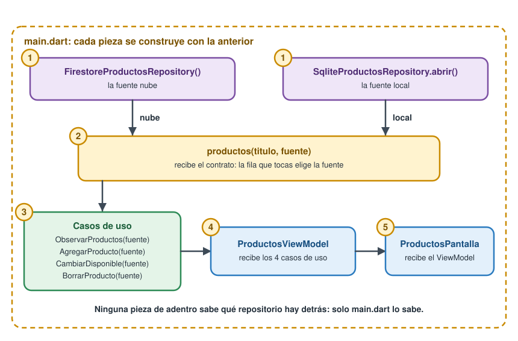
main.dart construye cada pieza con la anterior y es el único que sabe qué repositorio hay detrás.
lib/main.dart
import 'package:clean_app/data/firestore/firebase_cuenta_repository.dart';
import 'package:clean_app/data/firestore/firestore_productos_repository.dart';
import 'package:clean_app/data/sqlite/sqlite_productos_repository.dart';
import 'package:clean_app/domain/repositories/cuenta_repository.dart';
import 'package:clean_app/domain/repositories/productos_repository.dart';
import 'package:clean_app/domain/usecases/agregar_producto.dart';
import 'package:clean_app/domain/usecases/borrar_producto.dart';
import 'package:clean_app/domain/usecases/cambiar_disponible.dart';
import 'package:clean_app/domain/usecases/observar_productos.dart';
import 'package:clean_app/firebase_options.dart';
import 'package:clean_app/presentation/cuenta/cuenta_pantalla.dart';
import 'package:clean_app/presentation/cuenta/cuenta_view_model.dart';
import 'package:clean_app/presentation/productos/productos_pantalla.dart';
import 'package:clean_app/presentation/productos/productos_view_model.dart';
import 'package:firebase_core/firebase_core.dart';
import 'package:flutter/material.dart';
Future<void> main() async {
WidgetsFlutterBinding.ensureInitialized();
await Firebase.initializeApp(options: DefaultFirebaseOptions.currentPlatform);
runApp(
MaterialApp(
home: MainApp(
nube: FirestoreProductosRepository(),
local: await SqliteProductosRepository.abrir(),
cuenta: FirebaseCuentaRepository(),
),
),
);
}
class MainApp extends StatelessWidget {
const MainApp({
super.key,
required this.nube,
required this.local,
required this.cuenta,
});
final ProductosRepository nube;
final ProductosRepository local;
final CuentaRepository cuenta;
void abrir(BuildContext context, Widget pantalla) {
Navigator.push(context, MaterialPageRoute(builder: (_) => pantalla));
}
Widget productos(String titulo, ProductosRepository fuente) {
return ProductosPantalla(
titulo: titulo,
viewModel: ProductosViewModel(
observar: ObservarProductos(fuente),
agregar: AgregarProducto(fuente),
cambiar: CambiarDisponible(fuente),
borrar: BorrarProducto(fuente),
),
);
}
@override
Widget build(BuildContext context) {
return Scaffold(
appBar: AppBar(title: const Text('clean_app')),
body: ListView(
children: [
ListTile(
title: const Text('Cuenta'),
onTap: () => abrir(
context,
CuentaPantalla(viewModel: CuentaViewModel(cuenta)),
),
),
ListTile(
title: const Text('Productos en la nube'),
onTap: () =>
abrir(context, productos('Productos en la nube', nube)),
),
ListTile(
title: const Text('Productos en el teléfono'),
onTap: () =>
abrir(context, productos('Productos en el teléfono', local)),
),
],
),
);
}
}Por qué así:
main()inicializa Firebase y abre la base SQLite (SqliteProductosRepository.abrir()espera a que el archivo exista) antes derunApp. Después crea los tres repositorios y los entrega aMainApp.MainApprecibenubeylocalcomoProductosRepository: el tipo es el contrato, no la clase concreta. Ahí es donde se elige la fuente, y es el único archivo que tiene que saber qué repositorio hay detrás.productos(titulo, fuente)arma unaProductosPantallacon unProductosViewModelnuevo y los cuatro casos de uso apuntando a la mismafuente. La misma función abre “Productos en la nube” connubey “Productos en el teléfono” conlocal.- Las tres filas de la lista llevan a la pantalla de cuenta, a la de productos en la nube y a la de productos en el teléfono. Los datos de cada lista son independientes: cada fuente guarda lo suyo.
- Cambiar de fuente es cambiar el argumento que se pasa a
productos(...): una línea, en este archivo.
Qué debe verse al terminar: ejecuta flutter run en un emulador de Android o en un teléfono. La app abre con el título “clean_app” y tres filas: “Cuenta”, “Productos en la nube” y “Productos en el teléfono”.
- En “Cuenta”, registra un usuario o inicia sesión: aparece “Sesión iniciada” con tu correo.
- En “Productos en el teléfono”, agrega “Panela” con precio
3500: aparece en la lista, sin internet y sin sesión. Cierra la app y ábrela: el producto sigue ahí. - En “Productos en la nube”, con sesión iniciada, agrega un producto: aparece en la lista y, si el servidor aún no confirmó, con “(sin enviar)”. Sin sesión, el mensaje es
Inicia sesión para guardar cambios, según las reglas de la guía de persistencia y nube. - En cualquiera de las dos, un precio de
0o un nombre vacío muestraEscribe un nombre y un precio mayor que ceroy no borra lo escrito.
Error más probable: ejecutar la app en Chrome o en Windows. sqflite no corre allí, y como main abre la base antes de runApp, la app falla al arrancar con un error de sqflite. Usa un emulador de Android o un teléfono. Otro error frecuente es olvidar WidgetsFlutterBinding.ensureInitialized() antes de Firebase.initializeApp.
Contraste con mvvm_app: allí main armaba Service, Repository y ViewModel de una sola fuente. Aquí arma dos fuentes y las deja intercambiables con una sola pantalla.
Paso 17. Las pruebas, sin Firebase ni SQLite
Qué se hace: escribir tres archivos de prueba. El primero es un repositorio falso en memoria que reemplaza a Firestore y a SQLite; los otros dos son pruebas que lo usan o que no necesitan ninguna fuente.
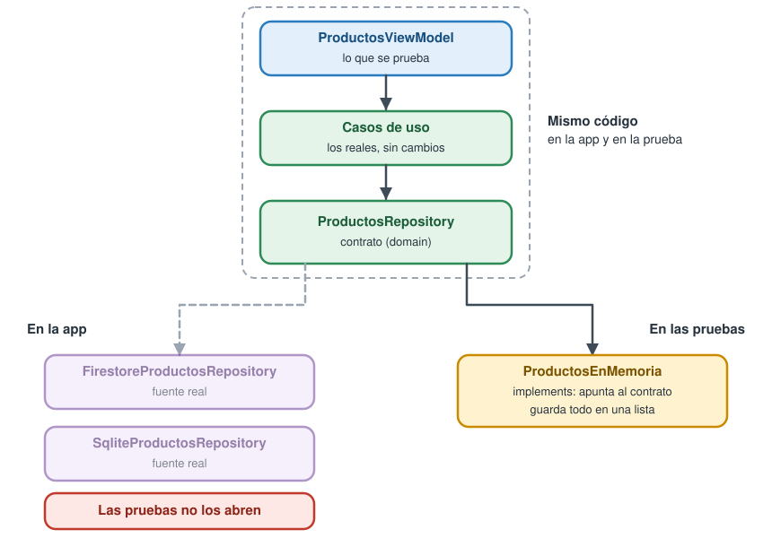
Mismo ViewModel, mismos casos de uso y mismo contrato: solo cambia la fuente que hay detrás.
Primero la fuente falsa. Cumple el mismo contrato que los repositorios reales, pero guarda todo en una lista.
test/fakes/productos_en_memoria.dart
import 'dart:async';
import 'package:clean_app/domain/entities/nuevo_producto.dart';
import 'package:clean_app/domain/entities/producto.dart';
import 'package:clean_app/domain/repositories/productos_repository.dart';
class ProductosEnMemoria implements ProductosRepository {
ProductosEnMemoria() {
_emitir();
}
final _productos = <Producto>[];
final _salida = StreamController<List<Producto>>();
var _siguiente = 1;
@override
Stream<List<Producto>> observar() => _salida.stream;
@override
Future<void> agregar(NuevoProducto nuevo) async {
_productos.add(
Producto(
id: '${_siguiente++}',
nombre: nuevo.nombre,
precio: nuevo.precio,
disponible: true,
),
);
_emitir();
}
@override
Future<void> cambiarDisponible(String id, bool disponible) async {
final i = _productos.indexWhere((p) => p.id == id);
final p = _productos[i];
_productos[i] = Producto(
id: p.id,
nombre: p.nombre,
precio: p.precio,
disponible: disponible,
);
_emitir();
}
@override
Future<void> borrar(String id) async {
_productos.removeWhere((p) => p.id == id);
_emitir();
}
void _emitir() => _salida.add(List.of(_productos));
}Después la prueba del ViewModel. Usa los casos de uso reales con la fuente falsa:
test/productos_view_model_test.dart
import 'package:clean_app/domain/usecases/agregar_producto.dart';
import 'package:clean_app/domain/usecases/borrar_producto.dart';
import 'package:clean_app/domain/usecases/cambiar_disponible.dart';
import 'package:clean_app/domain/usecases/observar_productos.dart';
import 'package:clean_app/presentation/productos/productos_view_model.dart';
import 'package:flutter_test/flutter_test.dart';
import 'fakes/productos_en_memoria.dart';
Future<void> esperar() => Future<void>.delayed(Duration.zero);
void main() {
late ProductosViewModel vm;
setUp(() {
final fuente = ProductosEnMemoria();
vm = ProductosViewModel(
observar: ObservarProductos(fuente),
agregar: AgregarProducto(fuente),
cambiar: CambiarDisponible(fuente),
borrar: BorrarProducto(fuente),
);
});
tearDown(() => vm.dispose());
test('muestra la lista vacia de la fuente al empezar', () async {
await esperar();
expect(vm.productos, isEmpty);
});
test('agrega un producto valido y aparece en la lista', () async {
expect(vm.agregar(' Panela ', '3500'), isTrue);
await esperar();
expect(vm.productos!.single.nombre, 'Panela');
expect(vm.productos!.single.precio, 3500);
expect(vm.error, isNull);
});
test('rechaza datos invalidos con el mensaje de la regla', () async {
expect(vm.agregar('Panela', '0'), isFalse);
expect(vm.agregar('Panela', 'abc'), isFalse);
expect(vm.agregar(' ', '2000'), isFalse);
expect(vm.error, 'Escribe un nombre y un precio mayor que cero');
await esperar();
expect(vm.productos, isEmpty);
});
test('cambia la disponibilidad y borra', () async {
vm.agregar('Papa criolla', '2500');
await esperar();
final id = vm.productos!.single.id;
await vm.cambiarDisponible(id, false);
await esperar();
expect(vm.productos!.single.disponible, isFalse);
await vm.borrar(id);
await esperar();
expect(vm.productos, isEmpty);
});
}Y la prueba del dominio y del DTO:
test/dominio_y_datos_test.dart
import 'package:clean_app/data/dtos/producto_dto.dart';
import 'package:clean_app/domain/entities/nuevo_producto.dart';
import 'package:clean_app/domain/failures/falla.dart';
import 'package:flutter_test/flutter_test.dart';
void main() {
group('NuevoProducto', () {
test('recorta el nombre', () {
final nuevo = NuevoProducto(' Tomate chonto ', 1800);
expect(nuevo.nombre, 'Tomate chonto');
});
test('rechaza un nombre vacio o un precio que no es mayor que cero', () {
for (final (nombre, precio) in [
('', 100),
('Aguacate hass', 0),
('x', -5),
]) {
expect(
() => NuevoProducto(nombre, precio),
throwsA(
isA<Falla>().having((f) => f.codigo, 'codigo', 'datos-invalidos'),
),
);
}
});
});
group('ProductoDto.desdeFila', () {
test('convierte el id entero a texto y 1 o 0 a booleano', () {
final disponible = ProductoDto.desdeFila({
'id': 7,
'nombre': 'Platano',
'precio': 2200,
'disponible': 1,
}).aEntidad();
final agotado = ProductoDto.desdeFila({
'id': 8,
'nombre': 'Platano',
'precio': 2200,
'disponible': 0,
}).aEntidad();
expect(disponible.id, '7');
expect(disponible.disponible, isTrue);
expect(agotado.disponible, isFalse);
});
});
}Por qué así:
ProductosEnMemoria implements ProductosRepository: es la prueba de que el contrato vale. El ViewModel no distingue entre este falso, Firestore y SQLite.- El falso emite la lista vacía al construirse. El controlador de un
Streamguarda lo que se emite hasta que alguien escucha, así que el ViewModel recibe esa primera lista apenas se suscribe. esperar()cede el turno una vez (Future.delayed(Duration.zero)) para que los eventos delStreamlleguen antes de revisar el estado.- La prueba del ViewModel cubre agregar un producto válido (el nombre llega recortado), rechazar datos inválidos con el mensaje de la regla, y cambiar la disponibilidad y borrar.
- La prueba del dominio fija la regla del precio en un solo lugar y el DTO convierte
7en'7'y1y0en booleanos. - Ninguna prueba abre Firebase ni SQLite. El ViewModel y los casos de uso no importan ninguno de los dos, y
producto_dto.dartsolo usa un tipo de Firestore, sin inicializarlo.
Ejecuta las pruebas y el análisis:
flutter test
flutter analyzeQué debe verse al terminar: flutter test termina con All tests passed! (siete pruebas) y flutter analyze con No issues found!.
Comprueba también la regla de dependencia sobre tu propio código, en PowerShell, desde la carpeta clean_app:
Select-String -Path "lib\presentation\*\*.dart" -Pattern "clean_app/data"
Select-String -Path "lib\domain\*\*.dart" -Pattern "^import"El primer comando no debe mostrar nada: la presentación no importa data. El segundo lista los import del dominio, y todos deben empezar con package:clean_app/domain/: ni Flutter, ni Firebase, ni sqflite.
Error más probable: en test/productos_view_model_test.dart, el ViewModel se crea en setUp y se desecha en tearDown. Si quitas el tearDown, la suscripción al Stream sigue viva entre pruebas y puede mezclar eventos de una prueba con la siguiente. Otro error frecuente es no llamar a await esperar() antes de revisar vm.productos: la lista todavía es null.
Antes y después
La medida de una arquitectura es qué pasa cuando cambia un requisito. Tres requisitos, y el archivo que se toca en cada versión:
| Requisito | clase_nube (antes) |
mvvm_app |
clean_app |
|---|---|---|---|
| Cambiar la regla del precio (por ejemplo, un precio mínimo) | No había regla (línea 35 de productos_nube_pantalla.dart); ponerla era editar agregar en esa pantalla y repetirla en productos_pantalla.dart |
ui/productos/view_models/productos_view_model.dart (el if de agregar, mezclado con el mensaje) |
domain/entities/nuevo_producto.dart. Si cambia también el texto, además _mensajeDe en presentation/productos/productos_view_model.dart |
| Cambiar de fuente de datos (de la nube al teléfono) | Usar otra pantalla y otro modelo: productos_pantalla.dart, producto.dart y base_datos.dart en vez de productos_nube_pantalla.dart y producto_nube.dart |
Reescribir data/services/productos_service.dart y data/repositories/productos_repository.dart, que reciben tipos de Firestore. El ViewModel y la Vista no cambian si el nuevo Repository conserva el nombre y los métodos |
Una línea en main.dart: pasar local en vez de nube a productos(...). Una fuente nueva es un archivo nuevo en data/<fuente>/ que implemente el contrato. domain y presentation no se tocan |
| Probar sin Firebase | No se puede: la pantalla crea FirebaseFirestore.instance.collection('productos') en su propio estado (línea 13) |
Se puede con un falso que implementa la clase concreta (test/productos_view_model_test.dart), pero el ViewModel importa el archivo del Repository, que importa cloud_firestore |
ProductosEnMemoria en test/fakes/. El ViewModel y los casos de uso no importan Firebase ni sqflite |
El costo, sin maquillaje
Clean Architecture no es gratis, y esta guía no la defiende por ser “mejor”. Estas son las cifras de la app que acabas de construir.
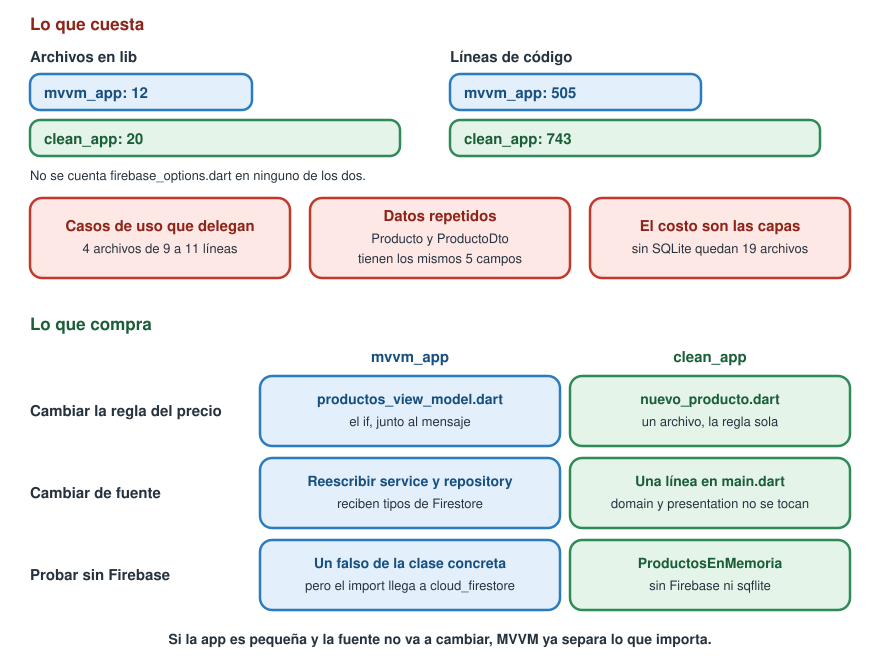
Clean cuesta más archivos y más líneas, y a cambio cada cambio se concentra en un solo lugar.
- Archivos: 20 en
libdeclean_appfrente a 12 enlibdemvvm_app, sin contarfirebase_options.darten ninguno de los dos. Compruébalo en PowerShell, dentro de cada proyecto:(Get-ChildItem lib -Recurse -Filter *.dart | Where-Object Name -ne firebase_options.dart).Count. En líneas, son 743 frente a 505. - Casos de uso que solo delegan: los cuatro archivos de
domain/usecasesmiden de 9 a 11 líneas y cada uno llama a un solo método del repositorio. Por sí solos no agregan comportamiento por ahora. Por esoCuentaViewModellos omite. - Datos repetidos:
ProductoyProductoDtotienen los mismos cinco campos. La repetición compra algo concreto (el dominio no importa Firestore), pero es repetición. - El costo no es SQLite: quitar
sqlite_productos_repository.dartdeja 19 archivos. La mayor parte viene de las capas, no de la segunda fuente.
Cuándo no vale la pena: una app pequeña, con una sola fuente de datos que no va a cambiar, reglas simples y pocas pantallas. Ahí MVVM con Repository ya separa lo que importa, y las carpetas de contratos, casos de uso y DTO son archivos que nadie va a cambiar.
Cuándo sí: cuando hay varias fuentes de datos (como aquí, nube y teléfono), cuando las reglas del negocio crecen y deben vivir en un solo lugar, o cuando hace falta probar la lógica sin infraestructura. Fíjate en lo que esta app logra y la versión MVVM no: una pantalla que sirve para las dos fuentes, una regla del precio que cambia en un archivo, y pruebas que corren sin Firebase.